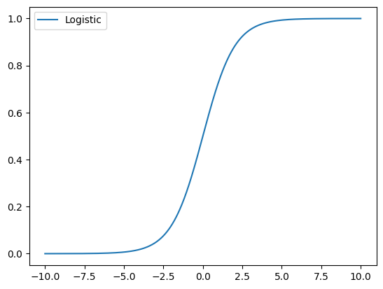
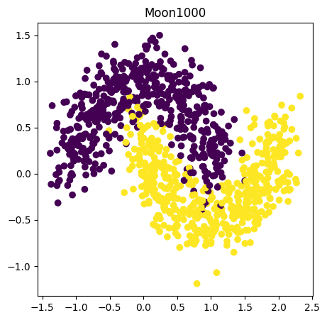
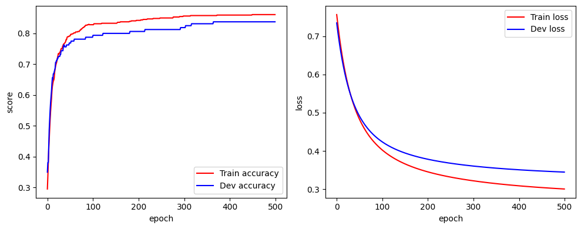

线性模型二分类
1. Logistic函数(也叫Sigmoid函数)
Logistic 回归会将输入特征与权重做线性叠加，然后通过非线性函数 输出后验概率 ：
其中 为 Logistic 函数（也叫 sigmoid 函数）：
下面给出实现 Logistic 函数的代码：
import torch
import matplotlib.pyplot as plt
def losistic(x):
return 1/(1+torch.exp(-x))
# 绘制logistic函数在(-10,10)的代码
x = torch.linspace(-10,10,1000)
y = logistic(x)
plt.figure()
plt.plot(x.tolist(),y.tolist(),label='Logistic')
plt.legend()
plt.show()
输出结果：

2. 构建Moon1000数据集
Moon100数据集是一个二分类数据集：1000 条样本，每个样本有 2 个特征。本数据集的样本来自带噪声的两个弯月形状函数，每个弯月对应一个类别。生成数据的代码如下：
import math
def make_moons(n_samples = 1000, shuffle = True, noise=None, seed = None):
# 生成两个弯月形状的二分类数据
g = torch.Generator().manual_seed(seed) if seed is not None else None
n_out = n_samples // 2
n_in = n_samples - n_out
outer_x = torch.cos(torch.linspace(0, math.pi, n_out))
outer_y = torch.sin(torch.linspace(0, math.pi, n_out))
inner_x = 1-torch.cos(torch.linspace(0, math.pi, n_in))
inner_y = 0.5-torch.cos(torch.linspace(0, math.pi, n_in))
X = torch.stack([
torch.cat([outer_x, inner_x]),
torch.cat([outer_y, inner_y]),
], dim=1)
y = torch.cat([torch.zeros(n_out), torch.ones(n_in)])
if shuffle:
idx = torch.randperm(X.shape[0], generator=g)
X = X[idx]; y = y[idx]
if noise is not None:
X = X + torch.normal(mean=0.0, std=noise, size=X.shape, generator=g)
return X, y
torch.manual_seed(0)
n_samples = 1000
X,y = make_moons(n_samples = n_samples, shuffle = True, noise = 0.2)
plt.figure()
plt.scatter(X[:,0].tolist(), X[:,1].tolist(), c = y.tolist())
# 训练集640条、验证集160条、测试集200条。
num_train, num_dev, num_test = 640, 160, 200
X_train, y_train = X[:num_train], y[:num_train]
X_dev, y_dev = X[num_train:num_train + num_dev], y[num_train:num_train + num_dev]
X_test, y_test = X[num_train + num_dev:], y[num_train + num_dev:]
y_train = y_train.reshape(-1, 1)
y_dev = y_dev.reshape(-1, 1)
y_test = y_test.reshape(-1, 1)
print('X_train shape:', X_train.shape, 'y_train shape:', y_train.shape)
输出结果：

torch.Size([640])
X_train shape: torch.Size([640, 2]) y_train shape: torch.Size([640, 1])
3. 模型构建
构建一个Model_LR，代码为：
class Op:
def __call__(self, inputs):
return self.forward(inputs)
def forward(self, *args, **kwargs):
raise NotImplementedError
def backward(self, *args, **kwargs):
raise NotImplementedError
class Model_LR(Op):
def __init__(self, input_size):
super().__init__()
self.params = {
'w': torch.rand(input_size, 1),
'b': torch.zeros(1),
}
# 存放参数的梯度
self.grads = {}
self.X = None
self.outputs = None
def forward(self, inputs):
"""输入 X (N, D)，输出预测概率 (N, 1)。"""
self.X = inputs
score = inputs @ self.params['w'] + self.params['b']
# 用数值稳定的 torch.sigmoid（等价于 logistic，但不会上溢）
self.outputs = torch.sigmoid(score)
return self.outputs
def backward(self, labels):
"""直接给出 loss 关于参数的梯度（手动推导）。"""
N = labels.shape[0]
self.grads['w'] = -1 / N * (self.X.t() @ (labels - self.outputs))
self.grads['b'] = -1 / N * (labels - self.outputs).sum()
# 随机生成 3 条长度为 4 的数据测试一下
torch.manual_seed(0)
inputs = torch.randn(3, 4)
print('Input:\n', inputs)
model = Model_LR(input_size=4)
outputs = model(inputs)
print('Output:\n', outputs)
输出结果
Input:
tensor([[ 1.5410, -0.2934, -2.1788, 0.5684],
[-1.0845, -1.3986, 0.4033, 0.8380],
[-0.7193, -0.4033, -0.5966, 0.1820]])
Output:
tensor([[0.1720],
[0.3071],
[0.2523]])
4. 损失函数：交叉熵
给定 个训练样本，使用交叉熵损失，Logistic 回归的风险函数为
向量形式：
对应的代码为：
class BinaryCrossEntropyLoss(Op):
def __init__(self):
self.predicts = None
self.labels = None
def __call__(self, predicts, labels):
return self.forward(predicts, labels)
def forward(self, predicts, labels):
self.predicts = predicts
self.labels = labels
N = predicts.shape[0]
eps = 1e-7
# 对模型的预测概率进行裁剪（clamp），是深度学习实践中一个非常常见且重要的数值稳定化操作。它的核心目的是防止概率值达到0或1的极端边界
p = predicts.clamp(eps, 1 - eps)
loss = -1/N*(labels.t() @ torch.log(p)+(1-labels).t() @ torch.log(1-p))
return loss.squeeze()
labels = torch.ones(3, 1)
bce_loss = BinaryCrossEntropyLoss()
print('loss:', bce_loss(outputs, labels))
5. 模型优化：梯度下降法
梯度计算方法：交叉熵 关于参数 和 的偏导数为
我们已经在 Model_LR.backward() 里实现了这两个偏导数。注意：这里 backward 实现的是"损失对参数"的梯度，不是 forward 算子本身的梯度――我们手动把整个 Loss + Sigmoid + Linear 的复合梯度推导出来直接使用。
参数更新公式为：
对应的python代码为：
from abc import ABC, abstractmethod
class Optimizer(ABC):
def __init__(self, init_lr, model):
self.init_lr = init_lr
self.model = model
@abstractmethod
def step(self):
pass
class SimpleBatchGD(Optimizer):
def step(self):
if isinstance(self.model.params, dict):
for key in self.model.params.keys():
self.model.params[key] = self.model.params[key] - self.init_lr * self.model.grads[key]
注：
ABC是 Python 中 Abstract Base Class（抽象基类）的缩写，来自 abc 模块。它用于创建抽象类，是面向对象编程中实现接口规范和多态的重要工具。抽象基类是一个不能被实例化的类，它的作用是定义一个模板或接口，规定子类必须实现哪些方法。from abc import ABC, abstractmethod class Optimizer(ABC): def __init__(self, init_lr, model): self.init_lr = init_lr self.model = model @abstractmethod def step(self): # 抽象方法：定义接口规范 pass # ? 正确：子类实现了 step 方法 class SimpleBatchGD(Optimizer): def step(self): # 具体实现 pass # ? 错误：子类没有实现 step 方法 class BadOptimizer(Optimizer): pass # 这会抛出 TypeError，无法实例化
6. 评价标准
在分类任务中，通常使用准确率（Accuracy）作为评价指标――正确预测的样本数与总样本数的比值：
对应的代码为：
def accuracy(preds, labels):
"""
- preds (N, 1) 二分类或 (N, C) 多分类
- labels (N, 1) 或 (N,)
"""
if preds.dim() > 1 and preds.shape[1] == 1:
# 二分类：阈值 0.5
preds = (preds >= 0.5).float()
elif preds.dim() > 1:
# 多分类：取 argmax
preds = preds.argmax(dim=1)
labels = labels.reshape(preds.shape)
return (preds == labels).float().mean().item()
# 测试一下
p = torch.tensor([[0.], [1.], [1.], [0.]])
l = torch.tensor([[1.], [1.], [0.], [0.]])
print('accuracy:', accuracy(p, l)) # 2/4 = 0.5
总结
将所有的代码合并到一起，最后添加训练和评估的代码，合并后的代码为：
import torch
import matplotlib.pyplot as plt
def losistic(x):
return 1/(1+torch.exp(-x))
# 1. 数据集
import math
def make_moons(n_samples = 1000, shuffle = True, noise=None, seed = None):
# 生成两个弯月形状的二分类数据
g = torch.Generator().manual_seed(seed) if seed is not None else None
n_out = n_samples // 2
n_in = n_samples - n_out
outer_x = torch.cos(torch.linspace(0, math.pi, n_out))
outer_y = torch.sin(torch.linspace(0, math.pi, n_out))
inner_x = 1-torch.cos(torch.linspace(0, math.pi, n_in))
inner_y = 0.5-torch.cos(torch.linspace(0, math.pi, n_in))
X = torch.stack([
torch.cat([outer_x, inner_x]),
torch.cat([outer_y, inner_y]),
], dim=1)
y = torch.cat([torch.zeros(n_out), torch.ones(n_in)])
if shuffle:
idx = torch.randperm(X.shape[0], generator=g)
X = X[idx]; y = y[idx]
if noise is not None:
X = X + torch.normal(mean=0.0, std=noise, size=X.shape, generator=g)
return X, y
torch.manual_seed(0)
n_samples = 1000
X,y = make_moons(n_samples = n_samples, shuffle = True, noise = 0.2)
plt.figure()
plt.scatter(X[:,0].tolist(), X[:,1].tolist(), c = y.tolist())
# 训练集640条、验证集160条、测试集200条。
num_train, num_dev, num_test = 640, 160, 200
X_train, y_train = X[:num_train], y[:num_train]
X_dev, y_dev = X[num_train:num_train + num_dev], y[num_train:num_train + num_dev]
X_test, y_test = X[num_train + num_dev:], y[num_train + num_dev:]
y_train = y_train.reshape(-1, 1)
y_dev = y_dev.reshape(-1, 1)
y_test = y_test.reshape(-1, 1)
print('X_train shape:', X_train.shape, 'y_train shape:', y_train.shape)
# 2. 模型
class Op:
def __call__(self, inputs):
return self.forward(inputs)
def forward(self, *args, **kwargs):
raise NotImplementedError
def backward(self, *args, **kwargs):
raise NotImplementedError
class Model_LR(Op):
def __init__(self, input_size):
super().__init__()
self.params = {
'w': torch.rand(input_size, 1),
'b': torch.zeros(1),
}
# 存放参数的梯度
self.grads = {}
self.X = None
self.outputs = None
def forward(self, inputs):
"""输入 X (N, D)，输出预测概率 (N, 1)。"""
self.X = inputs
score = inputs @ self.params['w'] + self.params['b']
# 用数值稳定的 torch.sigmoid（等价于 logistic，但不会上溢）
self.outputs = torch.sigmoid(score)
return self.outputs
def backward(self, labels):
"""直接给出 loss 关于参数的梯度（手动推导）。"""
N = labels.shape[0]
self.grads['w'] = -1 / N * (self.X.t() @ (labels - self.outputs))
self.grads['b'] = -1 / N * (labels - self.outputs).sum()
# 3. 损失函数
class BinaryCrossEntropyLoss(Op):
def __init__(self):
self.predicts = None
self.labels = None
def __call__(self, predicts, labels):
return self.forward(predicts, labels)
def forward(self, predicts, labels):
self.predicts = predicts
self.labels = labels
N = predicts.shape[0]
eps = 1e-7
# 对模型的预测概率进行裁剪（clamp），是深度学习实践中一个非常常见且重要的数值稳定化操作。它的核心目的是防止概率值达到0或1的极端边界
p = predicts.clamp(eps, 1 - eps)
loss = -1/N*(labels.t() @ torch.log(p)+(1-labels).t() @ torch.log(1-p))
return loss.squeeze()
# 4. 优化方法
from abc import ABC, abstractmethod
class Optimizer(ABC):
def __init__(self, init_lr, model):
self.init_lr = init_lr
self.model = model
@abstractmethod
def step(self):
pass
class SimpleBatchGD(Optimizer):
def step(self):
if isinstance(self.model.params, dict):
for key in self.model.params.keys():
self.model.params[key] = self.model.params[key] - self.init_lr * self.model.grads[key]
# 5. 评价标准
def accuracy(preds, labels):
"""
- preds (N, 1) 二分类或 (N, C) 多分类
- labels (N, 1) 或 (N,)
"""
if preds.dim() > 1 and preds.shape[1] == 1:
# 二分类：阈值 0.5
preds = (preds >= 0.5).float()
elif preds.dim() > 1:
# 多分类：取 argmax
preds = preds.argmax(dim=1)
labels = labels.reshape(preds.shape)
return (preds == labels).float().mean().item()
# 后续代码
import os
class RunnerV2:
"""全批量梯度下降；记录 train/dev 历史到 history 字典；保存 dev 最优模型。
- model：自定义 Op 算子（持有 params/grads 字典并实现 backward(labels)）
- optimizer：实现 step() 的对象（如 SimpleBatchGD）
- metric / loss_fn：评价指标与损失函数（返回 tensor 或 float 均可）
"""
def __init__(self, model, optimizer, metric, loss_fn):
self.model = model
self.optimizer = optimizer
self.loss_fn = loss_fn
self.metric = metric
# 训练过程指标统一收纳到 history 字典中
self.history = {
"train_loss": [], "dev_loss": [],
"train_score": [], "dev_score": [],
}
def train(self, train_set, dev_set, num_epochs=100, log_epochs=100,
save_path="model_best.pt"):
# 用 -inf 初始化保证首轮一定触发对比
best_score = -float("inf")
X, y = train_set
for epoch in range(num_epochs):
# 训练一步
logits = self.model(X)
trn_loss = self.loss_fn(logits, y)
if hasattr(trn_loss, "item"):
trn_loss = trn_loss.item()
trn_score = self.metric(logits, y)
if hasattr(trn_score, "item"):
trn_score = trn_score.item()
self.model.backward(y)
self.optimizer.step()
self.history["train_loss"].append(trn_loss)
self.history["train_score"].append(trn_score)
# 验证集评估 + 写入历史 + best-checkpoint
dev_score, dev_loss = self.evaluate(dev_set)
self.history["dev_loss"].append(dev_loss)
self.history["dev_score"].append(dev_score)
if dev_score > best_score:
self.save_model(save_path)
print(f"best score updated: {best_score:.5f} -> {dev_score:.5f}")
best_score = dev_score
if (epoch + 1) % log_epochs == 0:
print(f"[Train] epoch {epoch+1} loss {trn_loss:.4f} score {trn_score:.4f}")
print(f"[Dev] epoch {epoch+1} loss {dev_loss:.4f} score {dev_score:.4f}")
def evaluate(self, data_set):
"""纯查询：不写入历史。
训练循环里由 train 自己 append，最终测试集评估不会污染 dev 历史。
"""
X, y = data_set
logits = self.model(X)
loss = self.loss_fn(logits, y)
if hasattr(loss, "item"):
loss = loss.item()
score = self.metric(logits, y)
if hasattr(score, "item"):
score = score.item()
return score, loss
def predict(self, X):
return self.model(X)
def save_model(self, save_path):
os.makedirs(os.path.dirname(save_path) or ".", exist_ok=True)
torch.save(self.model.params, save_path)
def load_model(self, save_path):
self.model.params = torch.load(save_path, weights_only=True)
input_size = 2
model = Model_LR(input_size)
optimizer = SimpleBatchGD(init_lr=0.1, model=model)
loss_fn = BinaryCrossEntropyLoss()
metric = accuracy
runner = RunnerV2(model, optimizer, metric, loss_fn)
runner.train([X_train, y_train], [X_dev, y_dev],
num_epochs=500, log_epochs=50,
save_path='./checkpoint/model_lr_best.pt')
def plot(runner):
plt.figure(figsize=(10, 4))
plt.subplot(1, 2, 1)
plt.plot(runner.history['train_score'], color='red', label='Train accuracy')
plt.plot(runner.history['dev_score'], color='blue', label='Dev accuracy')
plt.ylabel('score'); plt.xlabel('epoch'); plt.legend(loc='lower right')
plt.subplot(1, 2, 2)
plt.plot(runner.history['train_loss'], color='red', label='Train loss')
plt.plot(runner.history['dev_loss'], color='blue', label='Dev loss')
plt.ylabel('loss'); plt.xlabel('epoch'); plt.legend(loc='upper right')
plt.tight_layout(); plt.show()
plot(runner)
score, loss = runner.evaluate([X_test, y_test])
print(f'[Test] score / loss: {score:.4f} / {loss:.4f}')
运行结果：

X_train shape: torch.Size([640, 2]) y_train shape: torch.Size([640, 1])
best score updated: -inf -> 0.35000
best score updated: 0.35000 -> 0.38125
best score updated: 0.38125 -> 0.43750
best score updated: 0.43750 -> 0.48750
best score updated: 0.48750 -> 0.51875
best score updated: 0.51875 -> 0.55000
best score updated: 0.55000 -> 0.57500
best score updated: 0.57500 -> 0.59375
best score updated: 0.59375 -> 0.61250
best score updated: 0.61250 -> 0.63750
best score updated: 0.63750 -> 0.65625
best score updated: 0.65625 -> 0.66875
best score updated: 0.66875 -> 0.67500
best score updated: 0.67500 -> 0.68125
best score updated: 0.68125 -> 0.68750
best score updated: 0.68750 -> 0.70625
best score updated: 0.70625 -> 0.71250
best score updated: 0.71250 -> 0.71875
best score updated: 0.71875 -> 0.72500
best score updated: 0.72500 -> 0.73125
best score updated: 0.73125 -> 0.74375
best score updated: 0.74375 -> 0.75625
best score updated: 0.75625 -> 0.76250
best score updated: 0.76250 -> 0.76875
...
[Train] epoch 450 loss 0.3046 score 0.8609
[Dev] epoch 450 loss 0.3477 score 0.8375
[Train] epoch 500 loss 0.3008 score 0.8609
[Dev] epoch 500 loss 0.3450 score 0.8375
Output is truncated. View as a scrollable element or open in a text editor. Adjust cell output settings...

[Test] score / loss: 0.8400 / 0.3264